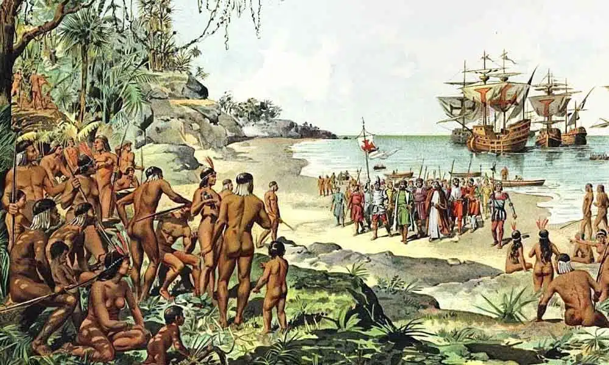

História
1- Brasil
Data: 22 de abril de 1500 A expedição portuguesa inicialmente era formada por 13 embarcações, liderada por Pedro Álvares Cabral Decidiram chamá-la de Brasil em 1511, devido à grande quantidade de árvores de pau-brasil na região. Mesmo assim, alguns autores europeus referiam-se às novas terras como "terra dos papagaios", pela quantidade desses pássaros encontrados na região. 2- Descobrimento do Brasil
O Descobrimento do Brasil marca um dos momentos mais significativos da história mundial, quando os navegadores portugueses, liderados por Pedro Álvares Cabral, desembarcaram nas terras brasileiras em 1500. Este evento foi resultado dos esforços de exploração marítima promovidos pela Coroa Portuguesa durante a chamada Era dos Descobrimentos. Os portugueses chegaram ao Brasil seguindo uma rota em direção às Índias, buscando estabelecer rotas comerciais lucrativas. Em 22 de abril de 1500, Pedro Álvares Cabral avistou pela primeira vez as terras que hoje conhecemos como Brasil, em uma expedição que contava com 13 embarcações. Após o desembarque, o local foi reivindicado para Portugal e batizado de "Ilha de Vera Cruz". Primeiros projetos Os primeiros projetos dos portugueses no Brasil estavam centrados principalmente na extração de recursos naturais, como o pau-brasil, uma árvore muito valiosa devido à sua madeira vermelha utilizada na produção de tinturas. A exploração do pau-brasil rapidamente se tornou uma atividade lucrativa para os colonizadores portugueses, dando início ao processo de colonização.3- Economia
No início da colonização, a economia brasileira era baseada principalmente na extração de recursos naturais, como o pau-brasil, além da exploração de outras atividades econômicas como a agricultura de subsistência e a produção de açúcar. Com o tempo, a produção açucareira se tornou a principal atividade econômica da colônia, impulsionada pelo sistema de plantation e pelo uso intensivo de mão de obra escrava africana. A economia colonial estava diretamente ligada ao sistema de plantação de cana-de-açúcar, que exigia uma grande quantidade de terra e mão de obra para operar as engenhos. Isso levou à introdução maciça do sistema escravista africano, que teve um impacto profundo na sociedade e na economia do Brasil colonial.4- Resumo
Em resumo, o Descobrimento do Brasil pelos portugueses em 1500 marcou o início de um processo de colonização que moldaria profundamente a história e a identidade do país. Os primeiros projetos e a economia inicialmente centrada na exploração de recursos naturais evoluíram para uma economia baseada na produção açucareira e no uso de mão de obra escrava, deixando um legado que ainda ressoa na sociedade brasileira contemporânea.5- Tabela
| Data | Evento |
| 22 de abril de 1500 | Avistamento da costa brasileira por Pedro Álvares Cabral |
| 26 de abril de 1500 | Desembarque de Pedro Álvares Cabral em Porto Seguro |
| 1º de maio de 1500 | Realização da primeira missa no Brasil pelos padres da expedição de Cabral |
| 3 de maio de 1500 | Cabral parte em direção à Índia |
| 1501 | Expedição de Gaspar de Lemos explora a costa brasileira |
| 1501 | Descoberta da Baía de Guanabara por Gaspar de Lemos |
| 1503 | Expedição de Gonçalo Coelho explora a costa nordeste do Brasil |
| 1504 | Expedição de Amerigo Vespucci explora a costa brasileira |
| 1507 | Publicação do mapa-múndi de Martin Waldseemüller, onde o novo continente é denominado "América" em homenagem a Amerigo Vespucci |